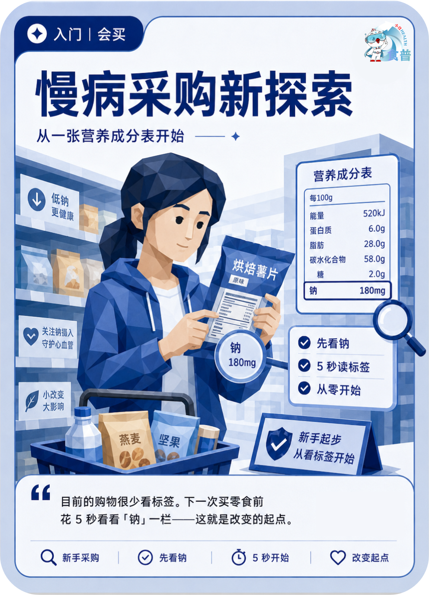

慢病管理人群
入门
会买
C16
慢病采购新探索
从一张营养成分表开始
目前的购物很少看标签。下一次买零食前花 5 秒看看「钠」一栏——这就是改变的起点。
手机端可点击“打开原图”后长按图片保存；也可以直接长按上方图卡保存。

从一张营养成分表开始
目前的购物很少看标签。下一次买零食前花 5 秒看看「钠」一栏——这就是改变的起点。
手机端可点击“打开原图”后长按图片保存；也可以直接长按上方图卡保存。